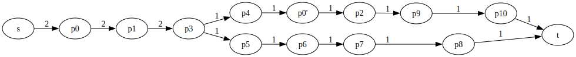

Computes short test case(s) that satisfies a coverage criterion for a GraphWalker model.
Open a terminal execute the following command to build gwplus:
make -e MODE=releaseNow, you are ready to use gwplus. Execute the following command to see how to use gwplus.
bin/gwplusYou should obtain the following output after executing bin/gwplus:
GWPlus: Fast Optimal Test Generator for GraphWalker
Usage: gwplus -i <json-file> [options]
GENERAL OPTIONS:
-c,--coverage COVERAGE Set the coverage criterion
-C,--copyright Output the copyright message and exit
-f,--finalgraph DOT-FILE Outputs the finel test plan to a DOT file
-H,--help Output this help message and exit
-h,--hyperpathgraph DOT-FILE Output the hyperpath graph to a DOT file
-i,--input JSON-FILE (Mandatory) An input GraphWalker model in JSON format
-m,--measure TXT-FILE(s) Output coverage of custom test(s)
-n,--netflow DOT-FILE Output the minimum flow graph to a DOT file
-p,--pathgraph DOT-FILE Output the path graph to a DOT file
-r,--requirements TXT-FILE Output the test requirements to a TXT file
-s,--simplegraph DOT-FILE Output the simple graph to a DOT file
-t,--tests JSON-FILE [PRCNT] Output test(s) with PRCNT% coverage (Default: 100%)
-u,--unify JSON-FILE Output a unified GraphWalker model with no tests
-v,--verbose Timestamped status information to stdout
-V,--version Output version number and exit
COVERAGE OPTIONS:
vertex Vertices of a GraphWalker model
edge (Default) Edges of a GraphWalker model
edgepair Edge-pairs of a GraphWalker model
edgetriple Edge-triples of a GraphWalker model
NUMBER Edge paths up to a length (0=vertex, 1=edge, etc.)
prime1 Prime vertex paths of a GraphWalker model
prime2 Prime vertex paths and edges of a GraphWalker model
prime3 Prime edge paths of a GraphWalker model
TXT-FILE Custom test requirements from a TXT file
EXAMPLE USES:
bin/gwplus -i exps/001/m.json -c prime3 -s s.dot -p p.dot -f f.dot -t t.json -v
bin/gwplus -i exps/001/m.json -m exps/001/generated/t2.txt
bin/gwplus -i exps/001/m.json -c 0 -m exps/001/generated/t1.txt exps/001/generated/t2.txtbin/gwplus -i exps/001/m.json -c prime3 -s s.dot -p p.dot -f f.dot -t t.json -vThe first option in this example is -i exps/001/m.json. This option sets the input GraphWalker model to a toy graph whose meta information is in exps/001/info.json. When opened in GraphWalker studio, this toy graph appears as follows:
The second option -c prime3 sets the coverage criterion to the highest setting.
The third option -s s.dot saves the simple graph of the toy graph. For coverage criteria settings higher than vertex coverage, the simple graph is a line graph, i.e., a graph where all edges are vertices and vice versa. After executing the example command, you can print the simple graph to the terminal using cat s.dot and produce the following result:
digraph SimpleGraph {
rankdir=LR;
node [shape="rectangle"];
reset [shape="none", label="", width=0, height=0];
10 [label="ih"];
9 [label="hi"];
8 [label="bh"];
7 [label="ge"];
6 [label="fg"];
5 [label="ef"];
4 [label="de"];
3 [label="da"];
2 [label="cd"];
1 [label="bc"];
0 [label="ab"];
reset -> 0 [label="a"];
10 -> 9 [label="h"];
9 -> 10 [label="i"];
8 -> 9 [label="h"];
7 -> 5 [label="e"];
6 -> 7 [label="g"];
5 -> 6 [label="f"];
4 -> 5 [label="e"];
3 -> 0 [label="a"];
2 -> 4 [label="d"];
2 -> 3 [label="d"];
1 -> 2 [label="c"];
0 -> 8 [label="b"];
0 -> 1 [label="b"];
}A visualization of the above DOT graph is as follows:

The fourth option -p p.dot saves the path graph of test requirements. A visualization of the path graph is below:

The fifth option -f f.dot saves the final test plan. A visualization of the test plan is below:

The sixth option -t t.json saves the model + a list of predefinedEdgeIds denoting a test path that satisfies the prime3 coverage criterion. For this example, gwplus produces two test models. You can give the second test model to GraphWalker CLI using the following command:
java -jar graphwalker-cli-4.3.2.jar offline -m t_2.json "predefined_path(predefined_path)"The GraphWalker CLI output should look like as follows:
{"currentElementName":"a"}
{"currentElementName":"ab"}
{"currentElementName":"b"}
{"currentElementName":"bc"}
{"currentElementName":"c"}
{"currentElementName":"cd"}
{"currentElementName":"d"}
{"currentElementName":"da"}
{"currentElementName":"a"}
{"currentElementName":"ab"}
{"currentElementName":"b"}
{"currentElementName":"bc"}
{"currentElementName":"c"}
{"currentElementName":"cd"}
{"currentElementName":"d"}
{"currentElementName":"da"}
{"currentElementName":"a"}
{"currentElementName":"ab"}
{"currentElementName":"b"}
{"currentElementName":"bh"}
{"currentElementName":"h"}
{"currentElementName":"hi"}
{"currentElementName":"i"}
{"currentElementName":"ih"}
{"currentElementName":"h"}
{"currentElementName":"hi"}
{"currentElementName":"i"}
{"currentElementName":"ih"}
{"currentElementName":"h"}The final option -v enables verbose messages in output. A correct execution should produce something similar to the following timestamped output:
[2024-07-27 13:50:48] - Verbose enabled.
[2024-07-27 13:50:48] - MODE = release
[2024-07-27 13:50:48] - Input Model File = exps/001/m.json
[2024-07-27 13:50:48] - Coverage Criterion = Prime Edge Path Coverage
[2024-07-27 13:50:48] - Simple Graph Name = s.dot
[2024-07-27 13:50:48] - Path Graph File = p.dot
[2024-07-27 13:50:48] - Final Test Plan File = f.dot
[2024-07-27 13:50:48] - Output Model File with Predefined Edges = t.json
[2024-07-27 13:50:48] - Coverage Percent = 100%
[2024-07-27 13:50:48] - Creating Empty GraphWalker Model...
[2024-07-27 13:50:48] - Filling the GraphWalker Model using 'exps/001/m.json'
[2024-07-27 13:50:48] - Filling adjacency lists to optimize path generation...
[2024-07-27 13:50:48] - Starting Element is a VERTEX
[2024-07-27 13:50:48] - # Vertices = 9
[2024-07-27 13:50:48] - # Edges = 11
[2024-07-27 13:50:48] - Saving the simple graph to 's.dot'...
[2024-07-27 13:50:48] - Generating/Loading Test Requirements...
[2024-07-27 13:50:48] - maxLen(primes) = 1
[2024-07-27 13:50:48] - maxLen(primes) = 2
[2024-07-27 13:50:48] - maxLen(primes) = 3
[2024-07-27 13:50:48] - maxLen(primes) = 4
[2024-07-27 13:50:48] - maxLen(primes) = 5
[2024-07-27 13:50:48] - maxLen(primes) = 6
[2024-07-27 13:50:48] - maxLen(primes) = 7
[2024-07-27 13:50:48] - maxLen(primes) = 8
[2024-07-27 13:50:48] - # Test Requirements = 11
[2024-07-27 13:50:48] - Generating Path Graph...
[2024-07-27 13:50:48] - Optimization Level = 0
[2024-07-27 13:50:48] - Saving path graph to 'p.dot'
[2024-07-27 13:50:48] - Generating Hyperpaths...
[2024-07-27 13:50:48] - Generating Network Flow Graph with Hyperpaths...
[2024-07-27 13:50:48] - Minimizing Total Flow...
[2024-07-27 13:50:48] - Expanding the Network Flow Graph...
[2024-07-27 13:50:48] - Expanding h2
[2024-07-27 13:50:48] - Initializing flow with test requirement constraints...
[2024-07-27 13:50:48] - Computing a feasible flow...
[2024-07-27 13:50:48] - 3%
[2024-07-27 13:50:48] - 15%
[2024-07-27 13:50:48] - Activating backwards edges...
[2024-07-27 13:50:48] - Minimizing the flow...
[2024-07-27 13:50:48] - 33%
[2024-07-27 13:50:48] - Deactivating backwards edges...
[2024-07-27 13:50:48] - Generating Test Plan...
[2024-07-27 13:50:48] - Removing zero flows...
[2024-07-27 13:50:48] - Deactivating dead vertices...
[2024-07-27 13:50:48] - Expanding h1
[2024-07-27 13:50:48] - Initializing flow with test requirement constraints...
[2024-07-27 13:50:48] - Computing a feasible flow...
[2024-07-27 13:50:48] - 6%
[2024-07-27 13:50:48] - 23%
[2024-07-27 13:50:48] - 26%
[2024-07-27 13:50:48] - Activating backwards edges...
[2024-07-27 13:50:48] - Minimizing the flow...
[2024-07-27 13:50:48] - 25%
[2024-07-27 13:50:48] - 50%
[2024-07-27 13:50:48] - Deactivating backwards edges...
[2024-07-27 13:50:48] - Generating Test Plan...
[2024-07-27 13:50:48] - Removing zero flows...
[2024-07-27 13:50:48] - Deactivating dead vertices...
[2024-07-27 13:50:48] - Expanding h0
[2024-07-27 13:50:48] - Initializing flow with test requirement constraints...
[2024-07-27 13:50:48] - Computing a feasible flow...
[2024-07-27 13:50:48] - 16%
[2024-07-27 13:50:48] - 33%
[2024-07-27 13:50:48] - Activating backwards edges...
[2024-07-27 13:50:48] - Minimizing the flow...
[2024-07-27 13:50:48] - 33%
[2024-07-27 13:50:48] - Deactivating backwards edges...
[2024-07-27 13:50:48] - Generating Test Plan...
[2024-07-27 13:50:48] - Removing zero flows...
[2024-07-27 13:50:48] - Deactivating dead vertices...
[2024-07-27 13:50:48] - Saving the final test plan to 'f.dot'
[2024-07-27 13:50:48] - Creating Tests...
[2024-07-27 13:50:48] - Consuming s-t path #1
[2024-07-27 13:50:48] - Converting to path trace #1
[2024-07-27 13:50:48] - Removing new zero flows
[2024-07-27 13:50:48] - Constructing test path #1
[2024-07-27 13:50:48] - LengthOf(Test #1) = 14
[2024-07-27 13:50:48] - Saving to 't_1.json'
[2024-07-27 13:50:48] - Consuming s-t path #2
[2024-07-27 13:50:48] - Converting to path trace #2
[2024-07-27 13:50:48] - Removing new zero flows
[2024-07-27 13:50:48] - Constructing test path #2
[2024-07-27 13:50:48] - LengthOf(Test #2) = 14
[2024-07-27 13:50:48] - Saving to 't_2.json'
[2024-07-27 13:50:48] - # Tests = 2
[2024-07-27 13:50:48] - Total Test Length = 28
[2024-07-27 13:50:48] - Finished.bin/gwplus -i exps/001/m.json -m exps/001/generated/t2.txtThe above command measures the edge coverage of the test located in t2.txt and produces the following result:
Covered p0 2 times
Covered p1 2 times
Covered p2 1 times
Covered p3 0 times
Covered p4 0 times
Covered p5 0 times
Covered p6 0 times
Covered p7 2 times
Covered p8 2 times
Covered p9 2 times
Covered p10 3 times
63%bin/gwplus -i exps/001/m.json -c 0 -m exps/001/generated/t1.txt exps/001/generated/t2.txtThe above command measures the collective vertex coverage of the tests located in t1.txt and t2.txt, producing the following result:
Covered p0 2 times
Covered p1 2 times
Covered p2 1 times
Covered p3 2 times
Covered p4 2 times
Covered p5 2 times
Covered p6 1 times
Covered p7 3 times
Covered p8 4 times
Covered p9 4 times
Covered p10 5 times
100%In this part, we discuss how to reproduce the experiments. Note that we performed these experiments in a MacOS environment.
for i in "002" "003" "004" "005"; do rm -f exps/${i}/generated/*; done
make -e MODE=release
bash rq1_raw.sh
bash rq1_raw2.sh
bash rq1_tex.sh
pdflatex -interaction nonstopmode rq1.texThe above commands generate rq1.pdf, which depicts the relative test case lengths. Note that rq1_raw.sh generates all test cases from scratch and may take a few hours to complete.
for i in "002" "003" "004" "005"; do rm -f exps/${i}/generated/*; done
make -e MODE=release
bash generateTests.sh
bash rq2_raw.sh
bash rq2_raw2.sh
bash rq2_tex.sh
pdflatex -interaction nonstopmode rq2.texThe above commands generate rq2.pdf, which depicts the relative test redundancies. Note that these steps may also take a few hours to complete.
If the experiments fail to produce the pdf files for RQ1 and/or RQ2, some of the following prerequisites may be missing. Note that we performed our experiments on a MacOS system, although GWPlus should compile on both Linux and Windows. We use Homebrew to install most of the prerequisites of our experiments.
On a Linux machine, it should be possible to execute our experiments by aliasing the GNU's date to gdate and installing the rest of the components below.
makeOur compilation procedures use the make command. You can install it on a MacOS using homebrew:
brew install makeclangGWPlus's default compiler is CC=clang. If you use gcc, it will compile using the following command:
make -e MODE=release -e CC=gccgitGWPlus depends on a third party library called padkit. It automatically clones this library using the git command. You may install git on a MacOS using homebrew:
brew install gitjavaAlthough GWPlus is written in C, some of the experiments generate tests using the GraphWalker's built-in methods, implemented in Java. You may install java on a MacOS using homebrew:
brew install openjdkjqGraphWalker outputs tests in JSON format. However, our coverage measurement tool expects a plain TXT file. We convert GraphWalker tests to TXT files using jq. You may install jq on a MacOS using homebrew:
brew install jqgdateOur scripts measure elapsed time using the gdate command. You may install gdate on a MacOS using homebrew:
brew install coreutilspdflatexOur scripts create .tex files. To obtain .pdf files, you must compile these .tex files using pdflatex. Please go to https://www.tug.org/mactex/ to install MacTeX on a MacOS.